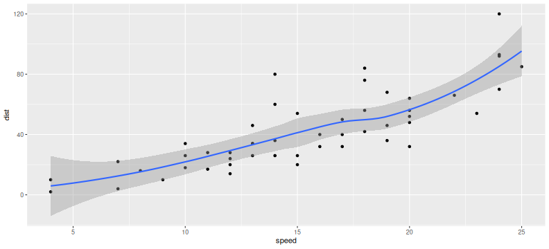

% Writing beautiful and reproducible slides quickly % Yihui Xie % 2012/04/30
Why
- after you finished typing
\documentclass{beamer}and\title{}, I have finished my first slide with markdown - far fewer commands to remember, e.g. to write bullet points, just begin with a dash “
-” instead of\begin{itemize}and\item; how things can be simpler? - I know you want math to show you are a statistician, e.g. \(f(k)={n \choose k}p^{k}(1-p)^{n-k}\)
- you do not need to maintain output – only maintain a source file
- HTML5/CSS3 is much more fun than LaTeX
A bit R code
head(cars)
## speed dist
## 1 4 2
## 2 4 10
## 3 7 4
## 4 7 22
## 5 8 16
## 6 9 10
cor(cars)
## speed dist
## speed 1.0000 0.8069
## dist 0.8069 1.0000
Graphics too
library(ggplot2)
qplot(speed, dist, data = cars) + geom_smooth()

How
- source editor: RStudio (perfect integration with knitr; one-click compilation); currently you have to use the version >= 0.96.109
- HTML5 slides converter: pandoc; this document was generated by:
pandoc -s -S -i -t dzslides --mathjax knitr-slides.md -o knitr-slides.html - the file
knitr-slides.mdis the markdown output from its source:library(knitr); knit('knitr-slides.Rmd') - or simple click the button
Knit HTMLin RStudio
For ninjas
- you should tweak the default style; why not try some Google web fonts? (think how painful it is to wrestle with fonts in LaTeX)
- pandoc provides 3 types of HTML5 slides (dzslides is one of them)
- you can tweak the default template to get better appearances
- if you have come up with a better dzslides template, please let me know or contribute to pandoc directly (e.g.
preblocks should havemax-widthandmax-height)
For beamer lovers
- pandoc supports conversion to beamer as well. period.
For Powerpoint lovers
- …
Reproducible research
It is good to include the session info, e.g. this document is produced with knitr. Here is my session info:
print(sessionInfo(), locale = FALSE)
## R version 4.6.1 (2026-06-24)
## Platform: x86_64-pc-linux-gnu
## Running under: Ubuntu 24.04.5 LTS
##
## Matrix products: default
## BLAS: /usr/lib/x86_64-linux-gnu/openblas-pthread/libblas.so.3
## LAPACK: /usr/lib/x86_64-linux-gnu/openblas-pthread/libopenblasp-r0.3.26.so; LAPACK version 3.12.0
##
## attached base packages:
## [1] stats graphics grDevices utils datasets methods base
##
## other attached packages:
## [1] ggplot2_4.0.3 knitr_1.52.4
##
## loaded via a namespace (and not attached):
## [1] digest_0.6.39 labeling_0.4.3 RColorBrewer_1.1-3
## [4] R6_2.6.1 codetools_0.2-20 Matrix_1.7-5
## [7] mgcv_1.9-4 xfun_0.61.1 lattice_0.22-9
## [10] farver_2.1.2 splines_4.6.1 gtable_0.3.6
## [13] glue_1.8.1 lifecycle_1.0.5 cli_3.6.6
## [16] S7_0.2.2 scales_1.4.0 vctrs_0.7.3
## [19] grid_4.6.1 withr_3.0.3 compiler_4.6.1
## [22] tools_4.6.1 nlme_3.1-169 evaluate_1.0.5
## [25] formatR_1.14.1 rlang_1.3.0
Misc issues
- the plots are too wide? use the chunk option
out.widthwhich will be used in<img width=... />, e.g.out.width=400px
Life is short
-
so keep your audience awake!